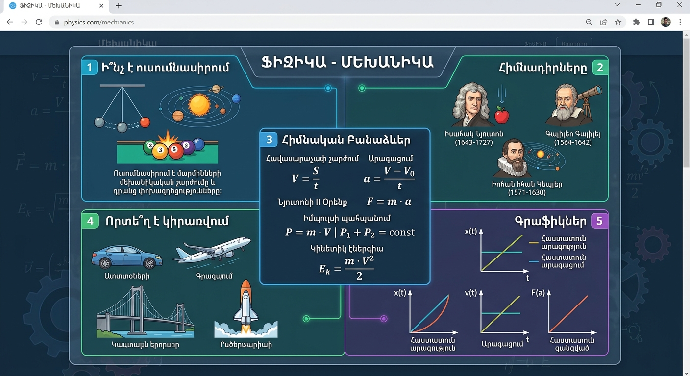
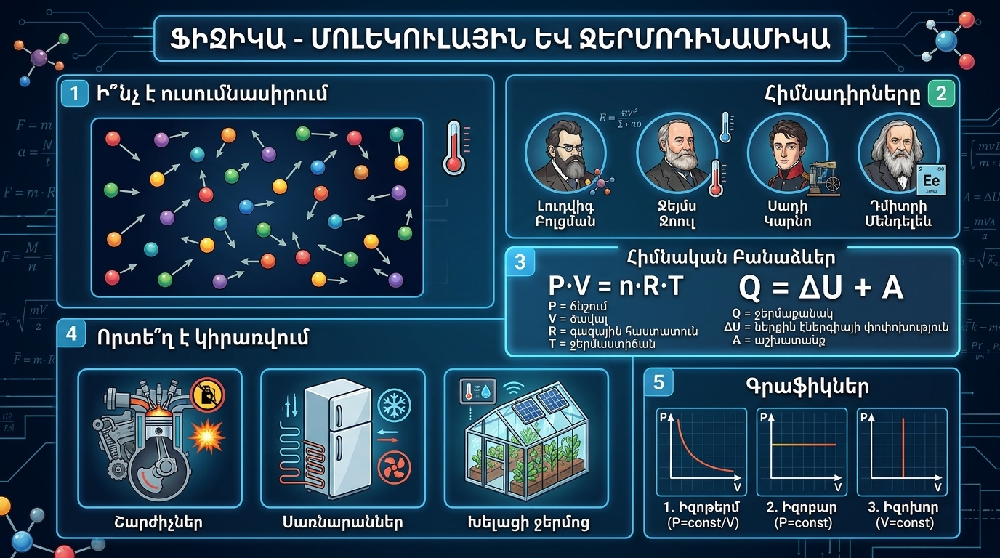
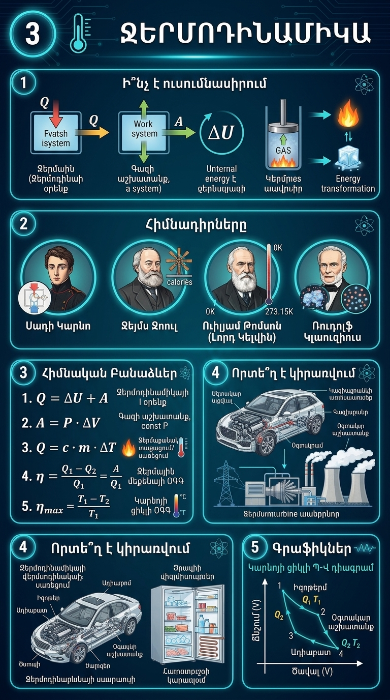
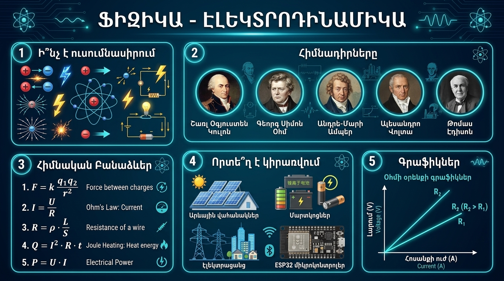
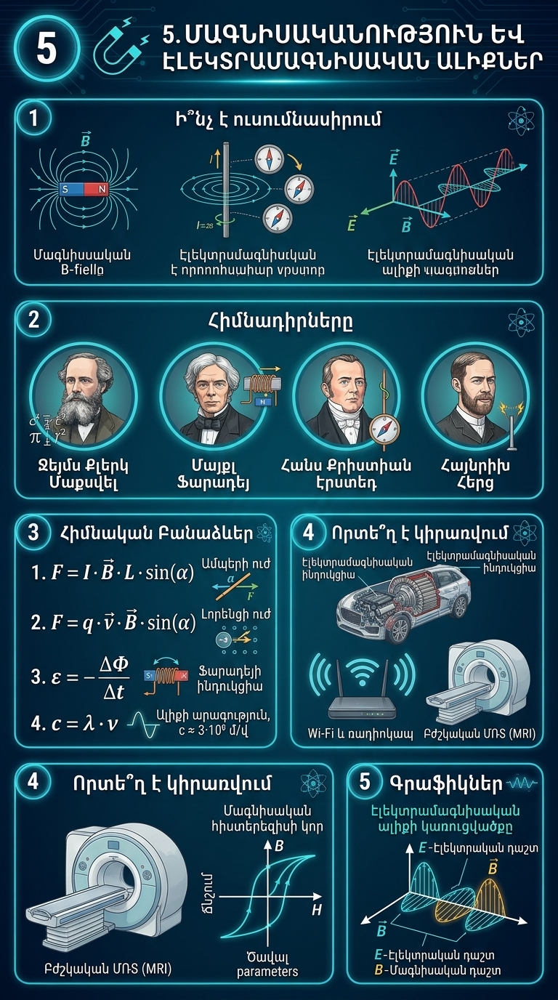
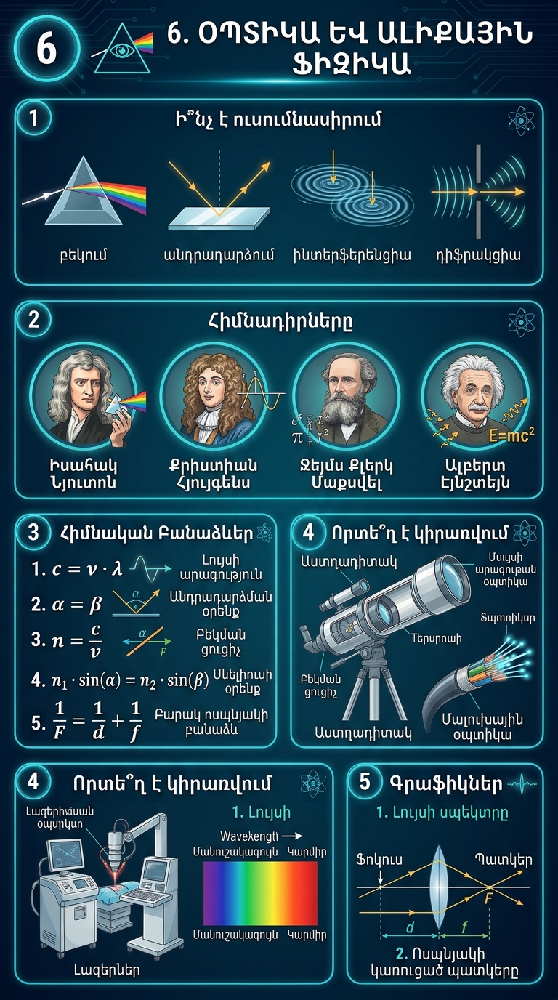
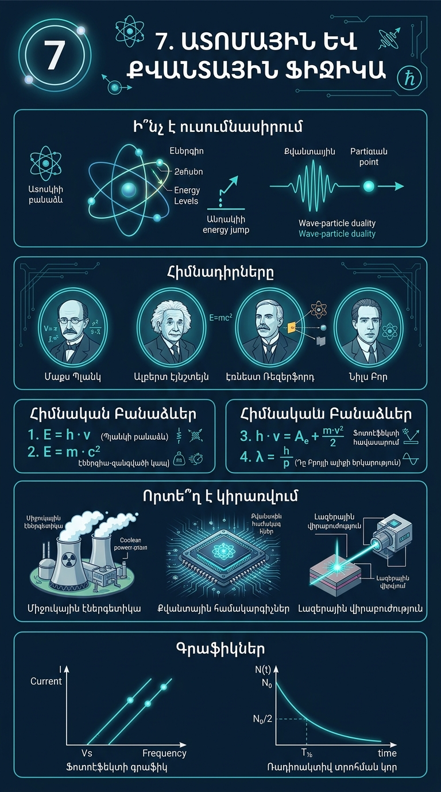

Սեղմեք բաժնի վրա՝ հիմնադիրներին, կիրառությանը, օրենքներին և գրաֆիկներին ծանոթանալու համար։
Մեխանիկան ուսումնասիրում է մարմինների մեխանիկական շարժումը (դիրքի փոփոխությունը տարածության և ժամանակի մեջ) և դրանց միջև փոխազդեցությունները:
Իսահակ Նյուտոն (դինամիկայի հիմնարար օրենքների հեղինակ), Գալիլեո Գալիլեյ (իներցիայի օրենք և ազատ անկում), Իոհան Կեպլեր (մոլորակների շարժման օրենքներ):
Ավտոմեքենաշինությունում, ավիացիայում, տիեզերագնացությունում (արբանյակների թռիչքի հաշվարկ), շինարարությունում (կամուրջների ու շենքերի կայունություն) և ռազմական բալիստիկայում:

Ուսումնասիրում է նյութերի կառուցվածքը մոլեկուլային մակարդակում, մոլեկուլների քաոսային շարժումը, ջերմաստիճանը և իզոպրոցեսները:
Լուդվիգ Բոլցման, Դմիտրի Մենդելեև, Բենուա Կլապեյրոն, Ռոբերտ Բոյլ և Էդմ Մարիոտ:
Գազային համակարգերում, խելացի ջերմոցներում (կլիմայի կառավարում), օդերևութաբանությունում և նյութագիտությունում:

Ջերմոդինամիկան ուսումնասիրում է ջերմային էներգիայի փոխակերպումը մեխանիկական աշխատանքի, ջերմափոխանակության օրենքները, էնտրոպիան և ջերմային համակարգերի հավասարակշռությունը:
Սադի Կարնո (ջերմային շարժիչների տեսության և Կարնոյի ցիկլի հիմնադիր), Ջեյմս Ջոուլ (էներգիայի պահպանման օրենք), Ուիլյամ Թոմսոն (Լորդ Կելվին) և Ռուդոլֆ Կլաուզիուս (էնտրոպիայի գաղափար):
Ներքին այրման, շոգեգոլորշային և ռեակտիվ շարժիչներում, ջերմային ու ատոմային էլեկտրակայաններում, սառնարանային համակարգերում, օդորակիչներում, ջերմային պոմպերում և Smart Eco-Campus-ի կլիմայի կառավարման համակարգերում:

Էլեկտրոդինամիկան ուսումնասիրում է էլեկտրական լիցքավորված մարմինների փոխազդեցությունը, էլեկտրական դաշտը, էլեկտրական հոսանքի առաջացման ու տարածման օրենքները:
Շարլ Կուլոն, Գեորգ Օհմ, Անդրե-Մարի Ամպեր, Ալեսանդրո Վոլտա, Թոմաս Էդիսոն:
Էներգետիկայում (էլեկտրացանցեր), էլեկտրոնիկայում, սմարթֆոններում, արևային պանելներում և ESP32 սենսորային պլատաներում:

Ուսումնասիրում է մագնիսական դաշտը, էլեկտրամագնիսական ինդուկցիայի երևույթը, շարժվող լիցքերի վրա ազդող ուժերը և էլեկտրամագնիսական ալիքների տարածումը տարածության մեջ:
Ջեյմս Քլերկ Մաքսվել (էլեկտրամագնիսական դաշտի միասնական տեսություն), Մայքլ Ֆարադեյ (էլեկտրամագնիսական ինդուկցիա), Հենդրիկ Լորենց, Հանս Քրիստիան Էրստեդ և Հայնրիխ Հերց (ԷՄ ալիքների հայտնագործում):
Էլեկտրաշարժիչներում, գեներատորներում, տրանսֆորմատորներում, Wi-Fi և ռադիոկապի համակարգերում, ռադարներում, բժշկական ՄՌՏ (MRI) ապարատներում և RFID/NFC տեխնոլոգիաներում:

Ուսումնասիրում է լույսի բնույթը, տարածումը, նյութի հետ փոխազդեցությունը, ինչպես նաև անդրադարձման, բեկման, ինտերֆերենցիայի, դիֆրակցիայի և բևեռացման երևույթները:
Իսահակ Նյուտոն (մասնիկային տեսություն), Քրիստիան Հյույգենս (ալիքային տեսություն), Օգյուստեն Ֆրենել, Ջեյմս Քլերկ Մաքսվել (լույսի էլեկտրամագնիսական բնույթ), Ալբերտ Էյնշտեյն (ֆոտոնային տեսություն):
Ակնոցներում, մանրադիտակներում, աստղադիտակներում, լուսանկարչական ապարատներում, մալուխային օպտիկայում (ինտերնետ), լազերներում (բժշկություն, արդյունաբերություն), հոլոգրաֆիայում և արևային պանելներում:

Ուսումնասիրում է ատոմի և միջուկի կառուցվածքը, քվանտային երևույթները, լույսի մասնիկային (ֆոտոնային) բնույթը, ֆոտոէֆեկտը, ռադիոակտիվությունը և հարաբերականության տեսությունը:
Մաքս Պլանկ (քվանտային տեսության հիմնադիր), Ալբերտ Էյնշտեյն (ֆոտոէֆեկտ, հարաբերականություն), Էռնեստ Ռեզերֆորդ (ատոմի մոլորակային մոդել), Նիլս Բոր, Վերներ Հայզենբերգ և Մարի Կյուրի:
Ատոմային էլեկտրակայաններում, կիսահաղորդչային տեխնոլոգիաներում (միկրոպրոցեսորներ, ESP32), քվանտային համակարգիչներում, լազերային վիրաբուժությունում, ճառագայթային թերապիայում և GPS նավիգացիայում:
